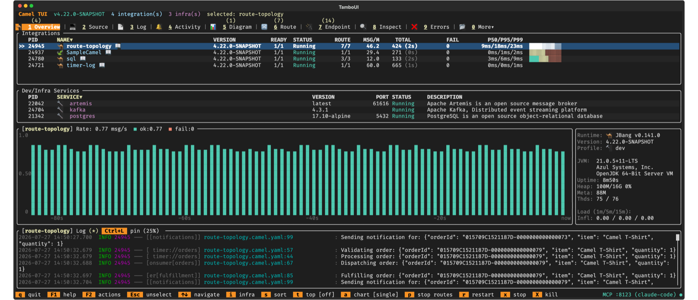

Camel TUI
Available as of Camel 4.21
Camel TUI is a terminal dashboard for developing, prototyping, and understanding Camel integrations. With over 40 screens organized across tabs, it makes your entire integration visible — you can browse your project source code with inline documentation, see your route topology, watch messages flow through processors, step through exchanges like scrubbing through a video timeline, inspect Kafka topics, run SQL queries against your DataSources, audit CVE vulnerabilities, and understand what Camel actually does with your routes. No more black box.

Key Features
-
Run anything — your own routes, the built-in examples, or an existing Spring Boot or Quarkus project (Getting started).
-
Write routes with help — a source editor that checks YAML, Java and XML routes as you type, completes endpoint options, fixes problems and shows the live run data of each line.
-
See the integration — the diagram from the architecture down to one route, with live message counts.
-
Watch and troubleshoot — live activity, message history, errors, traces, and deep dives into Kafka, SQL, memory leaks, JFR and CVEs.
-
Ask the AI — the AI panel (F8) with a hosted or a local model, and AI coding agents that see and drive the TUI over MCP and ACP.
-
Make it yours — themes, settings, the embedded shell, browser access and demo recording.
Getting Started
camel run my-route.yaml # in one terminal
camel tui # in another: auto-discovers every running integration
camel tui . # or open a project directory and press F10 to run itNo route yet? Press F2 and pick Run an example… to run one of the built-in examples on Camel Main, Spring Boot, Quarkus or JBang.
See Camel TUI Getting Started for each way to start, and for connecting existing Spring Boot and Quarkus applications.
| Press F1 or ? on any screen for context-sensitive help. Keyboard shortcuts are always shown in the footer bar. |
Tabs Overview
The TUI organizes information into tabs. Press number keys 1 through 0 to jump directly to any tab, or use Tab / Shift+Tab to cycle.
| Key | Tab | What It Shows |
|---|---|---|
1 | Overview | All running integrations and infrastructure services. Start here. |
2 | Source | File explorer and editor for your project code, with Camel checks, completion and documentation. |
3 | Log | Real-time application logs with search and filtering. |
4 | Activity | Live exchange activity with elapsed times, endpoint sends, and failure tracking. |
5 | Diagram | Visual route topology with drill-down into individual routes. |
6 | Routes | Route list with message counts, throughput, and processing times. |
7 | Endpoints | All registered endpoints with usage statistics. |
8 | Inspect | Message history and tracing — step through exchanges processor by processor. |
9 | Errors | Failures with stack traces and exchange context. |
0 | More | 30+ additional tabs organized by category (see below). |
The More menu (key 0) opens a popup with tabs organized into groups:
-
Routing — Browse Endpoints, Consumers, HTTP, Inflight, Producers, Route Controller
-
Observability — Circuit Breaker, Health, JFR, Metrics, Network Services, Exchange Events, Recovery Tasks, OpenTelemetry Spans
-
AI — Ollama (listed when an Ollama server is detected)
-
Data — JDBC DataSource, Kafka, Secrets, SQL Query, SQL Trace
-
JVM — Classpath, Heap Memory Histogram, Memory Usage, Memory Leak, Process, Startup, Threads
-
Project — Beans, Catalog, Configuration, CVE Audit, Maven Dependencies, Type Converters, Data Type Transformers
Tabs appear dynamically based on what the integration uses. For example, the Kafka tab appears when a Kafka component is in use, SQL tabs when a DataSource is present, Circuit Breaker when resilience4j is in use, Spans when OpenTelemetry is enabled, and JFR when camel-jfr is on the classpath. The TUI adapts to show only what’s relevant to your integration.
Tab badges show live counts — the Errors tab shows a red badge when errors exist and Routes shows the route count.
Two panels can be opened on top of any tab: F6 opens an embedded shell for running camel commands, and F8 opens the AI panel for asking questions about the running integrations.
More about the TUI
| Page | What it covers |
|---|---|
Your own routes, the built-in examples, opening a project, connecting Spring Boot and Quarkus applications | |
Reading and writing routes: checks as you type, quick fixes, fix with AI, completion, quick documentation, navigation, live run data | |
The architecture, topology and route views, external endpoints, metrics | |
Activity, message history, errors, spans, process, HTTP probe, CVE audit, Kafka, SQL, memory leaks, JFR, catalog | |
AI providers, slash commands, project overview, AI log | |
Ollama and OpenAI-compatible servers, the tool set for local models, what a question costs, the Ollama tab | |
MCP and ACP: what an AI agent can see and do, edits you confirm | |
The actions menu, embedded shell, themes, settings, browser access, recording demos |
Keyboard Shortcuts
Global (All Tabs)
| Key | Action |
|---|---|
1 - 0 | Jump to tab by number |
Tab / Shift+Tab | Next / previous tab |
F1 / ? | Context-sensitive help (toggle) |
F2 | Actions menu |
F3 | Switch between integrations (when multiple running) |
Ctrl+F | Browse the selected integration’s source files (the Overview tab also has plain f) |
F6 / Shift+F6 | Toggle the embedded shell panel / cycle its height |
F8 / Shift+F8 | Toggle the AI prompt panel / cycle its height |
F10 | Run menu (run, stop, restart, kill) |
Shift+F5 | Take screenshot |
Ctrl+C / Q / F2 → Quit | Quit |
Esc | Close popup / go back / return to Overview |
Source Tab
See the keyboard shortcuts of the Source Editor.
Command Line Options
| Option | Description | Default |
|---|---|---|
| Name, PID, or directory path of a Camel integration. When a directory is given, the TUI opens it as a project in the Source tab — you can browse the source code and run it with F10. When omitted, the TUI auto-discovers running integrations. | |
| Enable the embedded MCP server for AI agent access to the TUI. |
|
| Port for the embedded MCP server. |
|
| Enable the browser-accessible terminal (WebSocket) server. |
|
| Port for the web terminal server. |
|
| Screen refresh interval in milliseconds. |
|
| Color theme for this session (e.g., | |
| Replay a | |
| Size of the recorded terminal for |
|
| Frames per second captured by |
|
| Maximum duration in milliseconds captured by |
|